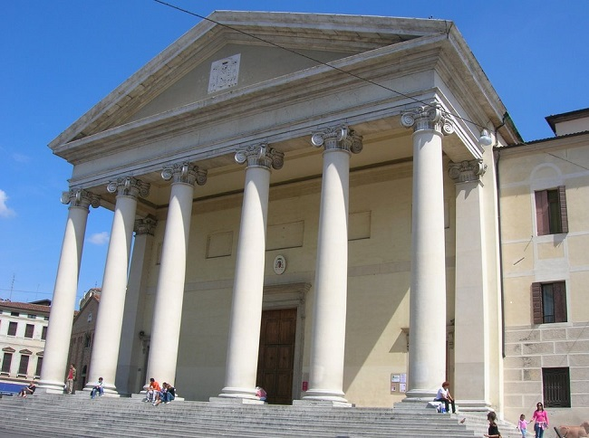
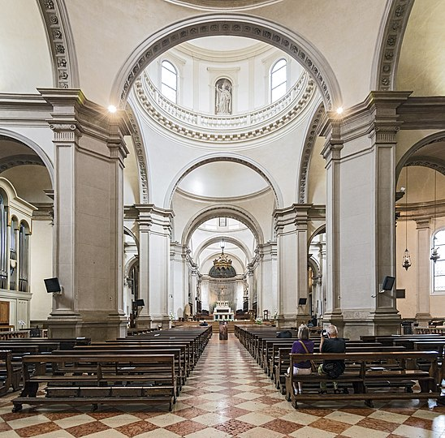

ARCHITETTURA DUOMO
Da piazza Duomo si accede all'ingresso principale della chiesa attraverso 11 gradini. L’edificio precedente,
risalente al 1300, aveva una struttura simile, ma con le scale che presentavano una disposizione e forma
circolari. La struttura è stata risistemata con lo scopo di renderla più elegante, raffinata e leggera. Nella
chiesa si distinguono 2 livelli: il primo che comprende il presbiterio e le cappelle terminali, superiore
rispetto al suolo di circa 1,2 m, e quello della cripta, inferiore invece di 2,5 metri. Per avere un punto di
riferimento più chiaro, si può fare l’esempio del livello del Calmaggiore che è di circa 1,2 metri sopra
quello
della cripta.
All'interno sono mantenuti i due muri portanti che dividono la cappella maggiore dalle due laterali; trovano
corrispondenza nella cripta con i muri originari che separano la cappella di San Liberale dalle due
subordinate.
Le pareti delle cappelle terminali non permettono però di vedere l'antica muratura, in quanto sono rivestite
di
intonaco.
Dall’esterno è possibile notare che il Duomo è costituito in tutto da sette cupole: cinque presenti nella
navata
centrale e due a chiusura delle cappelle. La facciata attuale, progettata e completata nel 1386
dall'architetto
trevigiano Francesco Bomben e dall'ingegnere comunale Gaspare Petrovich, si presenta sullo stesso piano della
torre che precede di qualche metro il Palazzo vescovile. La facciata presenta complessivamente una struttura
romanica: il nucleo originario è visibile nella parte centrale attraverso la muratura in mattoni decorata da
due
file di arcatelle cieche sovrapposte e sorrette da colonnine di pietra chiara.
Il pronao neoclassico, che risulta una struttura massiccia ed imponente, è stato costruito al posto
dell'antico
portico medievale. L'ampia scalinata lo sorregge; esso è costituito da sei colonne ioniche mentre ai lati sono
posti due leoni stilofori, di marmo rosso di Verona, i quali reggevano il protiro dell'edificio romanico
preesistente.
Si ipotizza che l'articolazione dei sostegni del Duomo in origine avesse un ritmo costituito da un modulo che
pone in sequenza un pilastro e due colonne. La struttura portante fu quindi mantenuta durante gli interventi
dei
secoli successivi.
La parte inferiore coperta dal portico, è stata rimaneggiata rendendo così più complesso stabilire quanti
ingressi avesse nella facciata il Duomo romanico: si ipotizza che nel XI secolo si accedesse all'edificio da
un'unica porta centrale, alla quale venne addossato un protiro, e forse da due porte lungo il corpo
longitudinale. Le porte della facciata corrispondenti alle navate laterali furono aggiunte in seguito. L’unica
porta che viene esplicitamente nominata è quella di San Liberale, indentificata come la porta maggiore. Il
portale principale è stato ricostruito all'interno nel 2005 nella controfacciata. Rimane comunque la porta che
era stata utilizzata in precedenza, ma solamente a fine ornamentale. In questa sono posti vari tasselli
raffiguranti storie della vita di Gesù, utilizzando una grande eleganza nei panneggi. In particolare, a
sinistra, nella terza tassella è raffigurata la Madonna che ha appena partorito Gesú, con accanto quindi il
figlioletto; nella quinta formella invece, come tutte le altre priva di prospettiva, si può notare un pastore
che aspetta una pastorella.
L’interno è invece costituito da tre navate con cappelle laterali e tre absidi finali, sotto ai quali si trova
l'antica cripta. Nella navata centrale c'è l'altare maggiore con il sarcofago del beato Arrigo da Bolzano
(morto
a Treviso nel 1315) e molte decorazioni preziose, come l'Immacolata nel catino absidale o gli stalli del coro.
Sempre la navata centrale risulta con uno schema modulare: infatti la base è quadrata e viene sormontata da
una
cupola, di forma quindi circolare. Si viene a creare una fusione tra le due figure, quadrato e
cerchio.
A sinistra è presente la cappella del santissimo Sacramento con le spoglie del fondatore del Monte di Pietà di
Treviso, il vescovo Niccolò Franco. Nella navata di destra invece si riscontra la Cappella dell'Annunziata o
del
Malchiostro, che accoglie l'estro artistico di due artisti veneti più noti del XVI secolo: Tiziano e
Pordenone.
Nella navata destra risiede il corpo sepolto di Beato Enrico, un povero proveniente da Bolzano che girava le
chiese pregando. Le persone, provando pietà verso di lui, gli davano l’elemosina e lui, a sua volta, le
conservava per poter distribuire ad altri poveri ciò che era riuscito a raccogliere. Quando morì, ai suoi
funerali parteciparono molte persone, riuscendo inoltre a contare 300 miracoli durante questa processione.
Questa storia si sparse in tutta Italia, tanto che Boccaccio raccontò di lui e dei suoi miracoli in una sua
novella. Dentro la teca presente dicono che ci sia il suo sangue privo di colore e profumato.
L’altare venne originariamente dedicato a san Pio X. Nel 2019 fu ridedicato ai Santi della Diocesi di Treviso
e
dotato di un grande quadro intitolato “Il pane della carità – i Santi della Chiesa di Treviso tra Ottocento e
Novecento”. Al centro dell'altare si trova la Cappella della Madonna, statua lignea realizzata da Ferdinand
Stuflesser, rappresenta Maria Ausiliatrice. Ai lati sono presenti le statue di San Liberale (patrono di
Treviso)
in marmo e di Sant'Antonio abate. Dietro l'altare maggiore si torva un presbiterio. Il complesso absidale si
deve all'intervento di Pietro Lombardo.
Sui pilastri antistanti la cappella sono presenti la statua di Alessandro Vittoria, raffigurante “San
Giovanni”
e “La Visitazione”, bassorilievo di Lorenzo Bregno. Accanto alla sacrestia, al termine della navata destra, si
trova la Cappella del Malchiostro, preceduta da un vestibolo rialzato. Questa risale al 1520 e venne
commissionata da Broccardo Malchiostro; ha una struttura quadrata e all’apice è situata una cupola di stile
rinascimentale.
Al termine della navata sinistra, a destra dell'altare maggiore, si trova la cappella del Santissimo
Sacramento
che ospita la tomba di Niccolò Franco. Nel vestibolo sono inoltre presenti le armi del vescovo Bernardo de'
Rossi.
Vi è infine un campanile, con la sua torre rimasta incompiuta per ordine dei dogi di Venezia che volevano
salvaguardare il primato in altezza della Basilica di San Marco.

